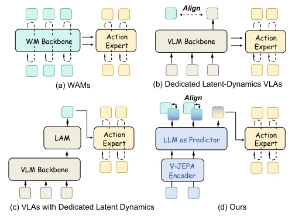
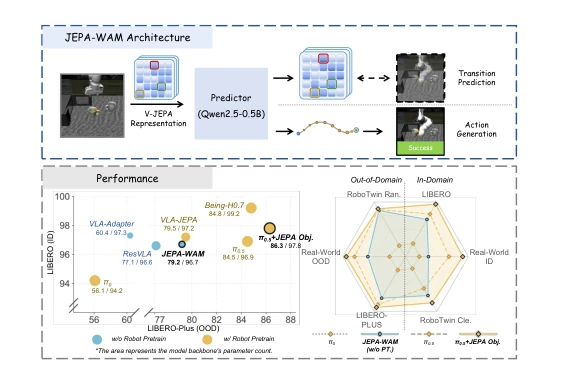
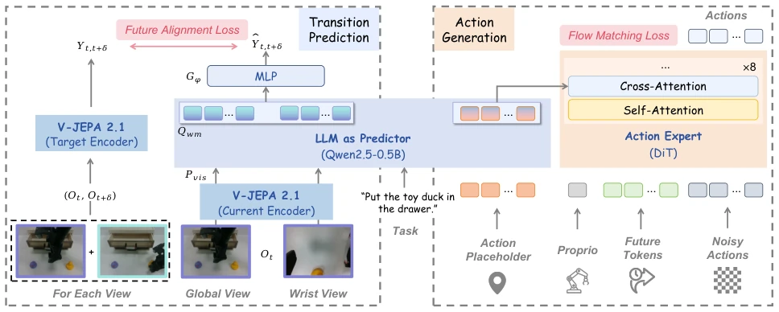
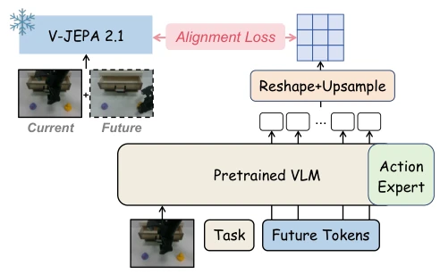
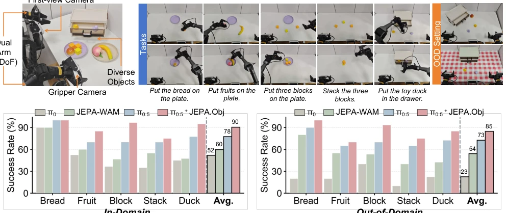
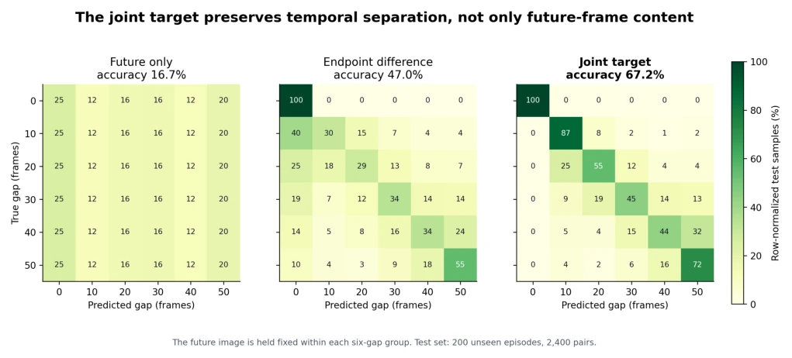
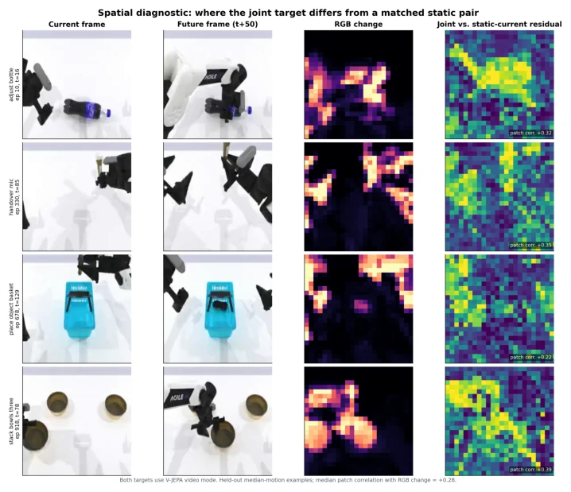

JEPA-WAM attempts to address the pain point of slow deployment of video-generative world models using the "predict without generate" approach. This move is indeed clever, saving the computational pitfall of iterative generation. It forcibly binds action prediction and state prediction onto a shared predictor, attempting to let the action expert "incidentally" learn to see through temporal changes, the logic is quite compelling. But upon closer inspection, this essentially adds a "vision training class" to the VLA model, utilizing V-JEPA's ready-made feature space to operate, belonging to standing on the shoulders of giants to ride the hype. Although it took first place on LIBERO-Plus, the cost is relying on a frozen V-JEPA encoder, significantly reducing flexibility. Moreover, it admits that if different instructions for the same image lead to different results, this universal temporal structure might not work, which is simply pouring cold water on "generalization". Overall, it is a good engineering optimization, but still falls short of true "world understanding", do not blow it up as a panacea.
研究动机Motivation
现有的 Vision-Language-Action (VLA) 模型虽然表现强劲，但往往只隐式地建模状态转移，导致在分布外（OOD）场景下鲁棒性不足 (Kim et al. 2024; Black et al. 2024)。为了解决这个问题，World Action Models (WAMs) 被提出，试图显式建模未来状态。然而，基于视频生成的 WAMs 在部署时因需要迭代预测未来帧，带来了巨大的计算成本 (Cen et al. 2025; Li et al. 2026b)。现有的潜在 WAMs 虽然避免了显式生成，但往往将预测目标压缩为少量潜在 token 或子目标，丢失了细粒度的空间结构 (Luo et al. 2026a; Chen et al. 2026)，或者将预测建模与动作生成的表示分离，导致预测监督无法有效塑造动作骨干网络 (Ma et al. 2026; Sun et al. 2026)。JEPA-WAM 旨在解决这两个核心问题：如何设计一个保留空间结构的预测目标，以及如何将预测监督直接整合到动作生成的骨干网络中，从而在保持高效的同时提升泛化能力。
Existing Vision-Language-Action (VLA) models, while performing strongly, often only implicitly model state transitions, leading to insufficient robustness in out-of-distribution (OOD) scenarios (Kim et al. 2024; Black et al. 2024). To solve this problem, World Action Models (WAMs) were proposed, attempting to explicitly model future states. However, video-generation-based WAMs bring huge computational costs during deployment due to the need for iterative prediction of future frames (Cen et al. 2025; Li et al. 2026b). Existing latent WAMs, while avoiding explicit generation, often compress prediction targets into a few latent tokens or sub-goals, losing fine-grained spatial structure (Luo et al. 2026a; Chen et al. 2026), or separate prediction modeling from action generation representations, causing prediction supervision to fail to effectively shape the action backbone network (Ma et al. 2026; Sun et al. 2026). JEPA-WAM aims to solve these two core problems: how to design a prediction target that retains spatial structure, and how to directly integrate prediction supervision into the action generation backbone network, thereby improving generalization capability while maintaining efficiency.

Figure 2: Comparison of latent WAM paradigms. JEPA- WAM couples transition prediction and action generation through a shared predictor.
JEPA-WAM is a latent world action model built within the pre-trained V-JEPA 2.1 representation space. Its core pipeline is divided into three stages: representation construction, shared prediction, and action generation. First, using the frozen V-JEPA encoder, current observations and future observations (temporal offset δ) are stacked and jointly encoded to construct a "Joint Current-Future Target". This target is not a separate future frame, but a temporal relationship representation that retains dense patch-level spatial structure, capable of capturing stable and changing regions. Second, a shared predictor (based on Qwen2.5-0.5B) is introduced, which processes visual representations, task instructions, and action placeholders simultaneously. This predictor is dual-supervised: on one hand, its visual token hidden states are mapped back to the V-JEPA space, predicting the aforementioned joint target via patch-level cosine distance loss; on the other hand, its extracted specialized representations are used to condition the action expert (DiT). This design allows the temporal prediction supervision signal to directly optimize the action generation backbone network, without retaining the prediction branch during inference. Finally, this method can be transferred to pre-trained VLA policies (such as π0.5), injecting temporal supervision by introducing learnable future tokens and aligning them, without disrupting the original perception and action pathways.

Figure 1: Overview and performance of JEPA-WAM. Top: JEPA-WAM couples latent transition prediction in the V- JEPA space with action generation through a shared pre- dictor. Bottom: JEPA-WAM maintains strong in-distribution performance while improving generalization under out-of- distribution shifts across LIBERO, RoboTwin 2.0, and real- world manipulation; the same transition supervision also benefits pretrained π0.5.

Figure 3: Overview of JEPA-WAM. A frozen V-JEPA encoder constructs a spatially structured joint current–future target for latent transition prediction. The shared predictor learns task-shared visual temporal structure from the current observation, while subsequent action representations integrate the visual context and task instruction to condition the action expert. The target branch is used only during training.

Figure 4: Transfer of the proposed transition supervision to a pretrained VLA policy.
The paper conducted extensive evaluations on LIBERO, LIBERO-Plus, RoboTwin 2.0, and real-world dual-arm manipulation platforms. In the out-of-distribution (OOD) tests on LIBERO-Plus, JEPA-WAM achieved an average success rate of 79.2% without large-scale robot policy pretraining, outperforming all baselines; when applied to pre-trained π0.5, the success rate further improved to 86.3%, setting a new best record. In the random layout tests of RoboTwin 2.0, JEPA-WAM also demonstrated extremely strong robustness. Ablation studies show that using the "Joint Current-Future Target" is more effective than predicting only future frames or endpoint differences; retaining patch-level spatial structure is superior to convolutional transformation; and direct supervision at the end of the shared predictor yields better results than intermediate layer auxiliary signals. Real-world experiments further confirm its generalization capability under visual and spatial distribution shifts, proving that the method is not only effective but also has extremely strong practicality.

Figure 5: Real-world evaluation on five bimanual manipulation tasks under in-distribution (ID) and out-of-distribution (OOD) settings. We compare JEPA-WAM with VLA baselines and evaluate the effect of transition supervision on pretrained π0.5.
其他图片Other Figures

Figure 6: Temporal-gap decoding with a fixed future observation. Rows denote true gaps and columns denote predicted gaps. Future-only features are uninformative by construction, endpoint differencing captures partial temporal ordering, and the joint target exhibits a substantially clearer diagonal structure.

Figure 7: Spatial diagnostic of the joint target. Patch-wise representation changes are compared with image-space changes between the current and future observations. The residual tends to be stronger around visually changing regions, while remaining more spatially distributed than a pixel-level motion map.